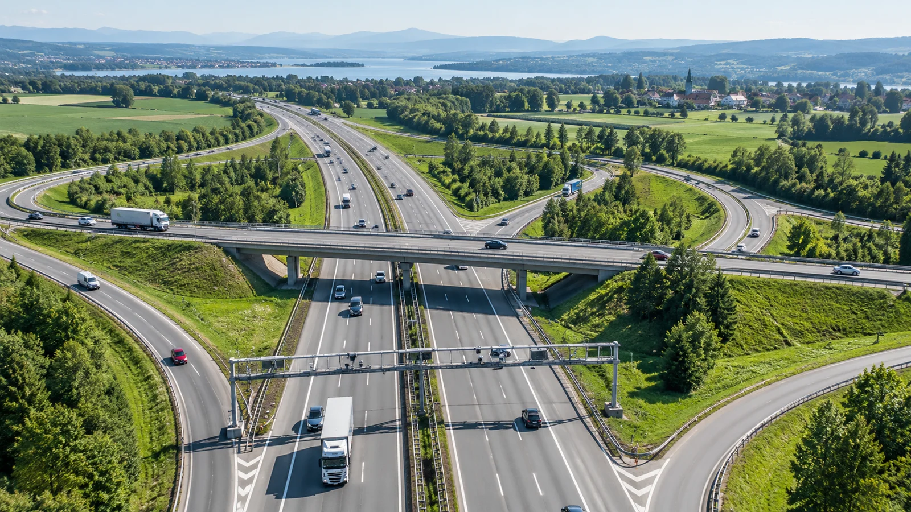
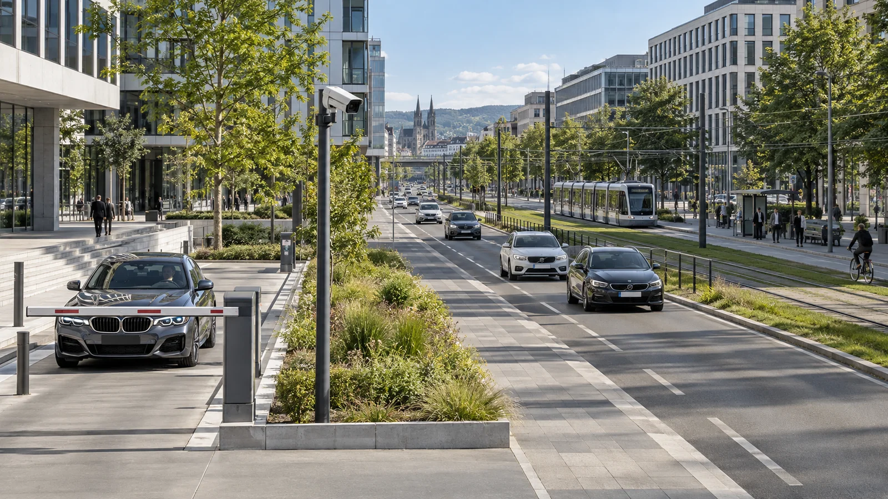

01
01Granice i carina
Kontrola prolaza i evidencija vozila.
Razgovarajmo o projektu
Edge AI / Vehicle intelligence
Prepoznaje. Proverava. Pokrece.
Inteligencija na terenu. Pregled cele mreze. GateVio donosi prepoznavanje vozila u vase operativne sisteme.
Gde GateVio radi
Od jedne ulazne trake do mreze lokacija.
01Kontrola prolaza i evidencija vozila.
Razgovarajmo o projektu 02
02Brzi ulazi. Manje cekanja.
Razgovarajmo o projektuPregled vozila kroz putnu mrezu.
Razgovarajmo o projektu
04Pristup zonama prema vasim pravilima.
Razgovarajmo o projektuArhitektura platforme
Lokalna obrada na NVIDIA Jetson uredjajima. Offline rad na lokaciji. Cloud za centralni pregled i REST API za povezivanje.
Razgovarajte sa nasim timomVozilo ulazi u kadar
Prepoznavanje na lokaciji
Vasi sistemi. Vasa pravila.
Vas sledeci projekat
Opisite nam okruzenje i cilj. Razgovarajmo o primeni GateVio platforme.